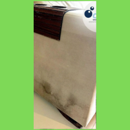

Quem Somos:
Bem-vindo à Clean Saúde Ambiental - Especialistas em Ambientes Livres de Pragas e Limpeza Eficiente
Somos uma empresa especializada em dedetização e sanitização, comprometidos em oferecer serviços de alta qualidade para garantir ambientes livres de pragas e com a máxima higiene. Com expertise reconhecida no mercado, focamos em soluções personalizadas para atender às necessidades específicas de cada cliente.
Nossa especialidade é a erradicação das temidas baratas francesinhas, utilizando métodos eficazes e seguros para eliminar essas pragas indesejadas, garantindo a tranquilidade e a saúde no seu ambiente residencial ou comercial.
Além disso, oferecemos serviços de limpeza de estofados com tecnologia de lavagem a seco, preservando a qualidade dos materiais e removendo sujeiras profundas, ácaros e bactérias, proporcionando um ambiente limpo e livre de agentes nocivos à saúde.
No combate aos cupins, nossa equipe altamente qualificada utiliza métodos avançados para eliminar e prevenir infestações, protegendo a estrutura dos seus espaços contra danos causados por essas pragas.
Valorizamos a satisfação do cliente e entregamos resultados por meio de um trabalho sério, pautado na transparência, compromisso e eficiência. Nosso objetivo principal é proporcionar a você um ambiente saudável e livre de preocupações com pragas e sujeiras.
Conte conosco para cuidar do seu espaço, pois sua tranquilidade é nossa prioridade. Entre em contato conosco para conhecer nossos serviços e deixe-nos garantir um ambiente limpo, seguro e livre de pragas para você.
Estamos prontos para atender você com excelência!
Atenciosamente,
Equipe Clean Saúde Ambiental.
Portfólio
| Antes | Depois |
|---|---|
 |
 |
|  | |